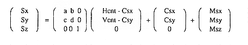

X-Xp Y-Yp Z-Zp ―――― ＝ ―――― ＝ ―――― Xs-Xp Ys-Yp Zs-Zp
Here, since the scroll map is fixed on the XY plane (Z = 0), the display coordinates (X, Y) on the scroll map can be obtained by the following formula.
X = k (Xs−Xp) + Xp Y = k (Ys−Yp) + YpHowever, -Zp K = --- Zs-Zp
This k is called the perspective transformation coefficient, and changes only in the vertical direction of the screen screen in the X-axis rotation, and is constant in the horizontal direction. In addition, the Y-axis rotation changes only in the horizontal direction of the screen screen and is constant in the vertical direction. In Z axis rotation, it is always constant.
Normally, the screen screen before rotation conversion is the same as the TV screen, so Sx is the horizontal coordinate value (H counter value) on the TV screen, Sy is the vertical coordinate value (V counter value) on the TV screen, and Sz is 0 It becomes. The coordinate value of the screen screen when it is rotated by the perpendicular (SZ axis) of this screen screen can be calculated by the following formula.

a, b, c, d: Screen matrix rotation matrix parameters Hcnt, Vcnt: HV counter value Csx, Csy: Center coordinates of screen screen rotation Msx, Msy, Msz: Amount of screen screen translation
The above formula is expressed as follows.
Sx = Xst + DX / Hcnt + DXst / Vcnt Sy = Yst + DY ・ Hcnt + DYst ・ Vcnt Sz＝Zst
However, Xst = −a ・ Csx−b ・ Csy + Csx + Msx Yst = −c ・ Csx−d ・ Csy + Csy + Msy